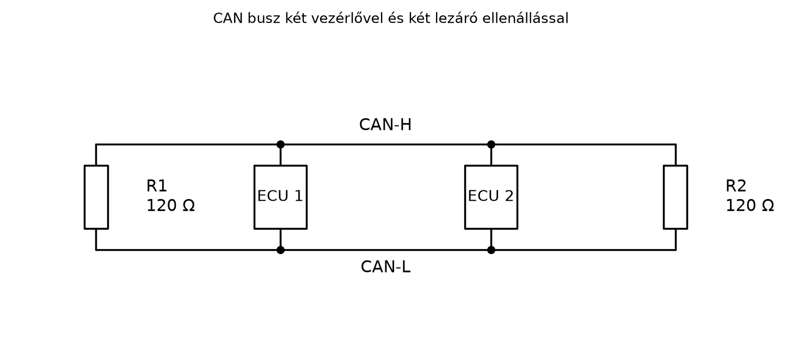
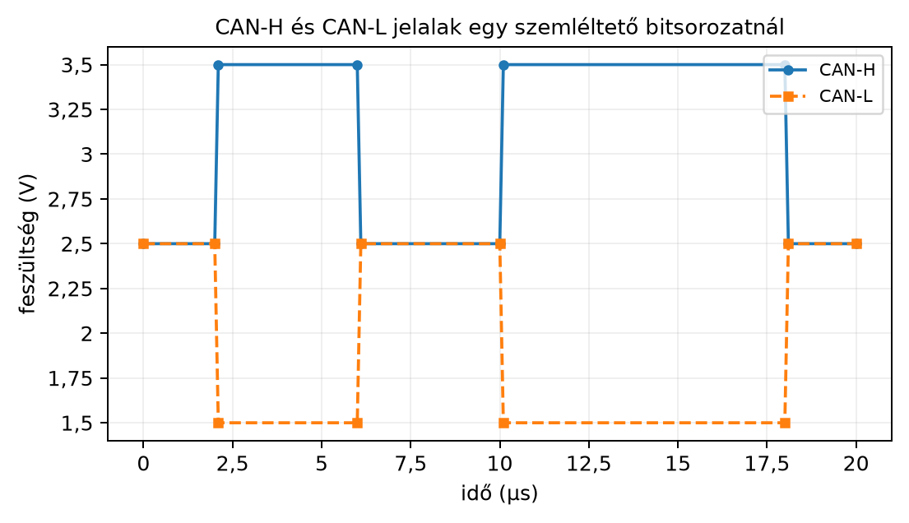

Egy autó úgy érkezik a műhelybe, hogy az ABS-lámpa ég, a motorvezérlő hibakódjai között pedig az U0121 kód olvasható: „nincs kommunikáció az ABS/ESP vezérlővel”. A jármű motorja jár, a teszter mégis csak néhány vezérlővel tud kapcsolatot felépíteni. Ilyenkor a szerelő nem cserélheti ki azonnal az ABS-vezérlőt; előbb azt kell eldöntenie, hogy maga a vezérlő hibás, vagy a hozzá tartozó adatbusz-vonal szakadt meg, zárlatos, esetleg egy csatlakozó korrodált. Ebben az alfejezetben a leggyakoribb CAN-buszhibákat, azok multiméteres és oszcilloszkópos mérését, valamint a hálózati hibakódok értelmezését tanuljuk meg.
A buszhálózatot két lezáró ellenállással rendelkező, közös kétvezetékes adatcsatornának érdemes elképzelni. A következő kapcsolási rajz két vezérlőt (ECU1, ECU2), valamint a busz két végén elhelyezett lezáró ellenállásokat mutatja:

Az ábrán a CAN-H és a CAN-L vezeték párhuzamosan fut. Az R1 és R2 lezáró ellenállások a busz végein a CAN-H és a CAN-L közé vannak kötve, hogy a nagysebességű jelváltozások ne verődjenek vissza a vezetékvégekről. A diagnosztikai csatlakozón (DLC) jellemzően a CAN-H a 6-os, a CAN-L a 14-es kapocshoz tartozik, de ez gyártófüggő lehet (ellenőrizendő: a gyártói kapcsolási rajz szerint).
Az oszcilloszkópon egészséges busz esetén a két jel tükörképszerűen változik:

Az ábrán a nyugalmi (recesszív) szinten mindkét vonal körülbelül -on van. Amikor egy adó domináns bitet küld, a CAN-H körülbelül -ra emelkedik, a CAN-L pedig körülbelül -ra süllyed.
Definíció. Domináns és recesszív bitszint. A nagysebességű CAN-hálózaton a busznak két logikai állapota van. Recesszív állapotban (logikai 1) a CAN-H és a CAN-L feszültsége közel azonos, jellemzően egyaránt körülbelül . Domináns állapotban (logikai 0) a CAN-H és a CAN-L eltávolodik egymástól: jellemzően és (ellenőrizendő: a járműtípus és a CAN-szabvány szerint).
Összefüggés. Differenciális feszültség.
Egészséges domináns bitnél:
Recesszív bitnél:
A vevő nem az egyes vezetékek földhöz viszonyított feszültségét, hanem ezt a különbséget érzékeli. Ezért a CAN kevésbé érzékeny a közös módusú zavarokra, amelyek mindkét vezetéket egyszerre emelik vagy süllyesztik.
Összefüggés. Lezáró ellenállások párhuzamos eredője. Ha a busz mindkét végén lezáró ellenállás van, akkor a diagnosztikai csatlakozón CAN-H és CAN-L között mérhető eredő:
Ha az egyik lezáró ellenállás kiesik vagy a hozzá vezető szakasz szakadt, akkor a mérés körülbelül lesz. Ha a CAN-H és a CAN-L rövidre zár, a mérés közel .
A buszhálózat hibái ritkán az elektronika belsejéből indulnak; gyakrabban a vezeték, a csatlakozó vagy az illesztés hibásodik meg.
A CAN-H vagy CAN-L vezeték szakadása miatt az érintett vezérlő nem tud kommunikálni, vagy csak időszakosan kommunikál. A szakadás lehet teljes, amikor a vezeték két vége fizikailag eltávolodik, vagy bizonytalan szakadás, amikor a vezeték mozgatás hatására néha érintkezik. A teszter gyakran „nincs kommunikáció” vagy „bus off” jellegű hibát mutat.
Ha a két buszvezeték egymáshoz ér, az oszcilloszkópon a differenciális jel eltűnik, mert a CAN-H és a CAN-L feszültsége közel azonos lesz. A vonalak egymással való zárlata gyakran sérült szigetelés, becsípődött kábel vagy átázott csatlakozó következménye.
Testzárlat esetén az egyik buszvezeték a testre, vagyis a jármű földpotenciáljára záródik. Ha például a CAN-H testzárlatos, akkor az gyakorlatilag körül marad, így a differenciális jel deformálódik. Tápzárlatnál a vezeték a -os fedélzeti hálózatra záródik; ekkor az adott vonal állandóan magas feszültségen lehet, és a vevők nem tudják értelmezni a kereteket.
A járműkülső területeken, például a kerékjáratban, az alvázon vagy az ajtóban futó csatlakozókba nedvesség juthat. A korrózió megnöveli az átmeneti ellenállást, félvezető jellegű utat képezhet a buszvezetékek és a test között, és időszakos hibákat okoz. Gyakori jel a zöldes, fehér oxidréteg és a felpuhult, megbarnult szigetelés.
Ha a lezáró ellenállás hiányzik, az adatkeretek visszaverődhetnek, ezért a kommunikáció időnként vagy folyamatosan hibás lehet. Ha pedig a buszon a szükséges kettőnél több lezáró ellenállás kerül valahova, az eredő ellenállás túl kicsi lesz, és a busz szintjei is torzulhatnak.
Figyelem. A lezáró ellenállást, a vezetékfolytonosságot és a zárlatokat csak feszültségmentes állapotban mérjük! A feszültség alatt lévő busz ellenállásmérése hamis értéket adhat, és a multimétert is károsíthatja. A mérés előtt a gyújtást kapcsoljuk ki, az akkumulátort a gyártói előírás szerint kössük le, és várjuk meg a gyártó által megadott kondenzátorkisülési időt (ellenőrizendő: gyártói előírás).
A diagnosztikai csatlakozón a CAN-H és a CAN-L között mérünk. Egészséges, két darab lezáró ellenállást tartalmazó buszon a mért érték körülbelül . A mérés önmagában nem bizonyítja, hogy a busz minden vezérlővel kommunikál, de gyorsan kimutatja a súlyos lezárási hibát, a CAN-H/CAN-L zárlatot és a teljes szakadást.
Ha a multimétert feszültségmérésre kapcsoljuk, és a busz nyugalomban van, a CAN-H és a CAN-L is körülbelül közelében lehet. Aktív kommunikáció közben a váltakozó jel miatt a digitális multiméter átlagértéket vagy zavart értéket mutathat, ezért a busz állapotát a nyugalmi feszültségmérésből csak korlátozottan szabad megítélni. Ha például az egyik vezetéken tartósan mérhető, testzárlatra, ha tartósan közeli feszültség, tápzárlatra gyanakodhatunk.
A pontosabb vizsgálathoz kétcsatornás oszcilloszkópot használunk. Az egyik csatornát a CAN-H-ra, a másikat a CAN-L-re kötjük, és a készülék matematikai funkciójával képezzük az A−B különbséget. Egészséges buszon a következő képet várjuk:
A tipikus buszhibák jelképét az ép jellel összevetve mutatja a következő ábra; minden panel alatt a feszültségmentesen mért CAN-H–CAN-L ellenállás várható értéke is szerepel (a fenti táblázattal egyezően).
Az interaktív változatban a hibafajta választható, és a különbségi (A−B) jel is bekapcsolható; a jel mellett a várható ellenállásérték is megjelenik.
Az alábbi táblázat a gyakori lezárási mérési eredményeket foglalja össze.
| Mért ellenállás CAN-H–CAN-L között | Lehetséges állapot |
|---|---|
| kb. 60 Ω | Egészséges busz két 120 Ω-os lezáróval |
| kb. 120 Ω | Egy lezáró vagy az ahhoz vezető szakasz hiányzik |
| kb. 0 Ω | CAN-H és CAN-L közötti rövidzár |
| végtelen vagy nagyon nagy | Mindkét lezáró hiánya, vagy teljes buszszakadás |
Az értékek tanulási példák (ellenőrizendő: a gyártói adat és a tényleges hálózati topológia).
Előírás. A fedélzeti diagnosztika hibakódjainak formátuma az ISO 15031 szabványsorozaton és az OBD-re vonatkozó nemzetközi DTC-megállapodáson alapul (ellenőrizendő: a hatályos ISO 15031 / SAE J2012 kiadás). A hálózati hibákat a kód első karaktere, az „U” jelöli. A pontos kódértelmezést mindig a gyártói diagnosztikai adatbázis vagy a rendszerteszter súgója adja.
| Példa U-kód | Jelentés |
|---|---|
| U0001 | CAN busz alapvető kommunikációs hiba |
| U0100 | Nincs kommunikáció a motorvezérlővel |
| U0121 | Nincs kommunikáció az ABS/ESP vezérlővel |
| U0140 | Nincs kommunikáció a karosszériavezérlővel |
A kódok tanulási példák; a pontos járműspecifikus értelmezés ellenőrizendő a gyártói diagnosztikai utasításban.
Az U-kódok csak a tünetet mutatják, nem az okot. Az U0121 például azt jelenti, hogy az ABS-vezérlő nem válaszol a hálózaton, de nem mondja meg, hogy a tápegysége hiányzik, a buszvezetéke szakadt, vagy maga a vezérlő hibás.
Szabály. Alvó üzem és nyugalmi áram. A jármű lezárása után a vezérlők egy része nem kapcsol ki azonnal. A biztonsági és komfortrendszerek meghatározott ideig éberek maradnak, majd a hálózatmenedzsment alvó üzembe küldi őket. A busz alvó állapotában a jármű nyugalmi árama a gyártói határ alá csökken; jellemző célértékként – alatti áram szerepel, de ez típusfüggő (ellenőrizendő: a gyártói karbantartási adat). Ha például egy vezérlő nem alszik el, mert épített ébresztőjele miatt folyamatosan kommunikál, a nyugalmi áram – lehet, és az akkumulátor néhány nap alatt lemerül.
Ébresztés. A fedélzeti hálózatot gyújtásráadás, ajtónyitás, távirányító, ülésfoglalás-érzékelő vagy más buszüzenet ébresztheti fel. Az ébresztés diagnosztikájában azt vizsgáljuk, hogy az alvó jármű nyugalmi árama indokolt, vagy egy hibás vezérlő tartja ébren a hálózatot.
A hálózati hiba behatárolásának általános lánca a következő:
Számítás. Egy nagysebességű CAN-buszon két darab lezáró ellenállás van, ahogyan a kapcsolási rajz is mutatja. A diagnosztikai csatlakozón CAN-H és CAN-L között mért eredő ellenállás:
Ha a mérés körüli értéket ad, az arra utal, hogy a két lezáró közül csak az egyik vesz részt az áramkörben. Ha a mérés közeli, a CAN-H és a CAN-L vezeték egymással rövidrezárt.
Számítás. Az oszcilloszkóp egy adott pillanatban a következő feszültségeket mutatja: és .
Ez domináns bitként értelmezhető. Ha egy későbbi pillanatban mindkét vezeték -ot mutat, akkor a differenciális feszültség:
ez recesszív állapot.
Számítás. Egy jármű gyári nyugalmi áram-határa legyen , a beépített akkumulátor kapacitása . Tegyük fel, hogy egy hibás vezérlő miatt a mért nyugalmi áram , vagyis . Ha az akkumulátor a hasznos kapacitásának feléig engedhető le, akkor a rendelkezésre álló töltésmennyiség:
A merülési idő hozzávetőlegesen:
Ha a jármű valódi nyugalmi árama a gyári határon belül, például lenne, akkor:
Ez szemlélteti, miért okozhat egyetlen éber vezérlő néhány nap alatt lemerült akkumulátort. A számítás erős egyszerűsítés; a tényleges merülési időt a hőmérséklet, az akkumulátor öregedése és a rendszeres indítások is befolyásolják.
A buszjavítás minőségét csak többlépéses ellenőrzéssel szabad elfogadni.
Ellenőrzőlista buszjavítás után
Ügyfélpanasz. Egy dízel személyautó ABS-visszajelzője menet közben kigyulladt, és a teszter az U0121 kódot tárolta: nincs kommunikáció az ABS/ESP vezérlővel. A motorvezérlővel a teszter tudott kommunikálni, tehát a diagnosztikai műszer és a DLC alapműködése rendben volt.
Vizsgálat. A szerelő először az ABS-vezérlő biztosítékait, tápfeszültségét és testpontját ellenőrizte; ezek rendben voltak. Feszültségmentesítés után a DLC-n CAN-H és CAN-L között körüli ellenállást mért, ezért a lezáró ellenállásokkal nem volt gond. A gyújtás ráadása után a multiméter a CAN-L vonalon gyanúsan alacsony, körüli feszültséget mutatott. Oszcilloszkópon a CAN-L jel nem a várt – között mozgott, hanem erősen zajos volt, és a busz időnként hibakereteket küldött.
Ok. A bal első kerékjárat mögött futó kábelköteg egyik gumitömítése sérült volt, a csatlakozóba nedvesség jutott. A CAN-L érintkezőn zöld korróziós réteg képződött, ami időszakos testzárlatot okozott. A hiba hőmérséklet- és rázkódásfüggő volt, ezért csak időnként jelentkezett.
Javítás és ellenőrzés. A szerelő a gyártói javítási utasítás szerint kicserélte a sérült csatlakozóházat és a CAN-L javítóvezetéket, majd visszaállította a kábelköteg tömítését. A javítás után az oszcilloszkópos jelalak tiszta lett, az U0121 kód törölhető volt, és próbaút után nem tért vissza. A nyugalmi áram alvó üzemben a gyári határon belül maradt.
Cél: A nem kommunikáló vezérlő hátterének behatárolása anélkül, hogy alkatrészt cserélnénk találomra.
Jármű- és adatazonosítás: Alvázszám, motorszám, modellév, felszereltség, gyártói diagnosztikai utasítás és aktuális kapcsolási rajz.
Szerszámok, mérőeszközök, anyagok: Multiméter CAT III besorolással, kétcsatornás oszcilloszkóp megfelelő szondákkal, rendszerteszter, gyártói javítóhuzal és vízzáró hüvely, csatlakozótisztító, hőzsugor cső, kéziszerszámok, munkalap.
Biztonsági korlát. A feladat tanműhelyi környezetre, oktató felügyeletére és a gyártói javítási utasítás betartására vonatkozik; a megadott értékek tanulási példák. A mérést feszültségmentes állapotban és a gyártói óvintézkedések szerint végezzük. Nagyfeszültségű (HV) járművön előbb a HV-feszültségmentesítést csak arra kiképzett, jogosult személy végezheti el.
Környezetvédelem. A csatlakozótisztítóból és a sérült vezetékdarabokból származó hulladékot az anyagbiztonsági adatlap és a helyi veszélyeshulladék-szabályzat szerint gyűjtsük, ne öntsük csatornába.
Lépések
Hiba: feszültség alatt mérünk ellenállást. A szerelő a gyújtást bekapcsolva méri a CAN-H és CAN-L közötti ellenállást. A műszer akár sérülhet, a mért érték pedig használhatatlan. Helyes: feszültségmentesítés után mérni.
Hiba: a multiméter átlagértékéből ítéljük meg a buszt. Aktív kommunikáció közben a digitális feszültségmérő változó, zajos értéket mutathat, ezért a szerelő tévesen vezérlőhibát állapít meg. Helyes: oszcilloszkóppal vizsgálni a busz időbeli jelalakját.
Hiba: csak a lezáró ellenállásra hagyatkozunk. A lezáró ellenállás mérése lehet , miközben egy vezérlő mégsem kommunikál, mert az adott vezérlőhöz vezető ág szakadt, vagy a vezérlő tápellátása hiányzik. Helyes: a teljes hibakeresési láncot követni.
Hiba: azonnal vezérlőt cserélünk. U0121 hibakódnál a tapasztalatlan szerelő egyből ABS-vezérlőt rendel. Valójában gyakrabban csatlakozó-, tápellátási vagy vezetékhiba áll a háttérben. Helyes: először a vezeték és a csatlakozó vizsgálata.
Hiba: nem dokumentáljuk a leválasztott vezérlőket. A diagnosztika során keletkezett hibakódokat elfelejtik törölni, így a javítás után zavaró, régi hibakódok maradnak a rendszerben. Helyes: a folyamatot jegyzőkönyvezni, a végén minden hibakódot törölni és újraolvasni.
1. feladat (A) Határozd meg a domináns és a recesszív bitszint fogalmát, és számítsd ki a differenciális feszültséget, ha és .
2. feladat (A) Egy buszon két darab lezáró ellenállás van. Számítsd ki a várható ellenállást a CAN-H és a CAN-L között. Mekkora értéket mérnél, ha csak egy lezáró ellenállás venne részt az áramkörben?
3. feladat (B) A teszter U0121 hibakódot mutat. A lezáró ellenállás , a nyugalmi feszültségek CAN-H és CAN-L vonalon is . Sorolj fel legalább három lehetséges okot, amelyeket ez az eredmény még nem zár ki, és írd le, milyen következő méréssel dönthetnéd el, hogy az ABS-vezérlőhöz vezető ág szakadt-e.
4. feladat (B) Kétcsatornás oszcilloszkópon az A csatorna a CAN-H jelet, a B csatorna a CAN-L jelet méri. Egy adott pillanatban az A csatorna -ot, a B csatorna -ot mutat. Számítsd ki a differenciális feszültséget, és magyarázd el, miért jobb a differenciális jel értékelése a különálló feszültségek helyett.
5. feladat (C) Egy járműben a kommunikáció időszakosan megszakad. A lezáró ellenállás , az oszcilloszkópos jel általában jó, de a kábelköteg mozgatásakor a CAN-H jel néha ellaposodik. Melyik hibafajta a legvalószínűbb? Tervezd meg a hibakeresés lépéseit a járművön.
6. feladat (D) Egy szervizben a buszjavítás után az akkumulátor másnap reggelre lemerül. A mért nyugalmi áram , a gyártói határ . Magyarázd el, hogyan állapítható meg, melyik vezérlő nem alszik el, és milyen méréssel igazolod a javítás sikerét.
Önellenőrzés – válaszok
1. feladat megoldása
Domináns bitnél a CAN-H és a CAN-L feszültsége eltávolodik, ezért a differenciális feszültség nagy. Recesszív bitnél a két feszültség közel azonos, ezért a differenciális feszültség közel nulla. A megadott értékekkel:
Ez domináns bitként értelmezhető.
2. feladat megoldása
Két párhuzamos eredője:
Ha csak egy lezáró ellenállás vesz részt, akkor a mérés .
3. feladat megoldása
A lezáró ellenállás és a nyugalmi feszültség normális, ezért a hiba lehet például:
A szakadás eldöntéséhez a gyártói kapcsolási rajz alapján megkeressük az ABS-vezérlő CAN-csatlakozóját, feszültségmentes állapotban megmérjük a vezeték folytonosságát a DLC és az ABS-csatlakozó között, majd bekapcsolt gyújtásnál oszcilloszkóppal ellenőrizzük, hogy az ABS-vezérlő csatlakozóján ugyanaz a buszjel látható-e.
4. feladat megoldása
A differenciális jel azért előnyös, mert a zavarok gyakran mindkét vezetéket azonos irányban emelik vagy süllyesztik, így a különbségképzés a közös zavart elnyomja. A vevő számára a domináns vagy recesszív állapotot éppen ez a különbség hordozza.
5. feladat megoldása
A legvalószínűbb időszakos szakadás vagy nagy átmeneti ellenállású csatlakozó a CAN-H ágban. A hibakeresés lépései:
6. feladat megoldása
A nyugalmi áram azt mutatja, hogy a hálózat nem alszik el. A nem alvó vezérlő megkereséséhez a járművet lezárjuk (az ajtózárakat és a motorháztető-kapcsolót csukott állásba állítjuk), az áramot lakatfogóval vagy áthidalással bekötött árammérővel mérjük, és megvárjuk a gyártói alvási időt (ellenőrizendő). Ezután a biztosítékokon eső feszültséget mérjük millivoltos tartományban, a biztosíték kihúzása nélkül (a kihúzás megszakítja a tápot, felébreszti a hálózatot és meghamisítja az eredményt); amelyiken a többinél nagyobb feszültség esik, annak az ágkörében folyik a többletáram (a biztosíték típusához tartozó mV–mA táblázat alapján, ellenőrizendő). Így találjuk meg azt az ágkört, amelyik ébren tartja a hálózatot. Ezután az ágkört vezérlőkre bontva meghatározhatjuk a tényleges nem alvó egységet. A javítás sikere akkor igazolt, ha a jármű lezárása és a gyártói várakozási idő letelte után a nyugalmi áram tartósan a határérték alatt marad.
A CAN-hálózat hibái leggyakrabban nem magukban a vezérlőkben, hanem a vezetékekben, csatlakozókban, lezáró ellenállásokban vagy a tápfeszültség-ellátásban keresendők. A lezáró ellenállás feszültségmentes mérésével gyorsan kimutatható a CAN-H–CAN-L zárlat, a teljes szakadás és a hiányzó lezáró. Két darab lezáró párhuzamos eredője . A busz jelalakját oszcilloszkóppal, lehetőleg differenciális A−B üzemmódban kell értékelni, mert a digitális multiméter átlagértéke félrevezető lehet. A hálózati hibakódok „U” kezdettel jelzik a kommunikáció hiányát; az U0121 például az ABS/ESP-vezérlő elvesztésére utal, de az okot külön méréssel kell megtalálni. A javítás végén a hibakódokat törölni, a kommunikációt ellenőrizni, és az alvó üzemi nyugalmi áramot a gyártói határ alatt igazolni kell. Továbbvitt eredmény. A buszhálózat szisztematikus, feszültségmentesítés utáni ellenállás- és feszültségmérése, valamint az ágazatonkénti leválasztás logikája az Áramút-alapú hibakeresés: feszültségesés, szakadás, zárlat, nyugalmi áram alfejezetben tovább használható.
Az alfejezet a gépjármű-hálózati diagnosztika általános méréstechnikai gyakorlatára, az ISO 15031 szabványsorozat OBD-hibakódrendszerére és a CAN-hálózatok ISO-szabványaira épül. A konkrét kapocsjelölések, a DLC-lábkiosztás, a feszültségszintek, a lezáró ellenállások értéke, a nyugalmi áram határértéke, a várakozási idők és a hibakód-jelentések gyártó- és típusfüggők, ezért azokat a kiadás előtt a gyártói javítási utasítás és a hatályos szabványok szerint ellenőrizni kell. Az U-kódok értelmezésénél a gyártói diagnosztikai adatbázis a mérvadó.